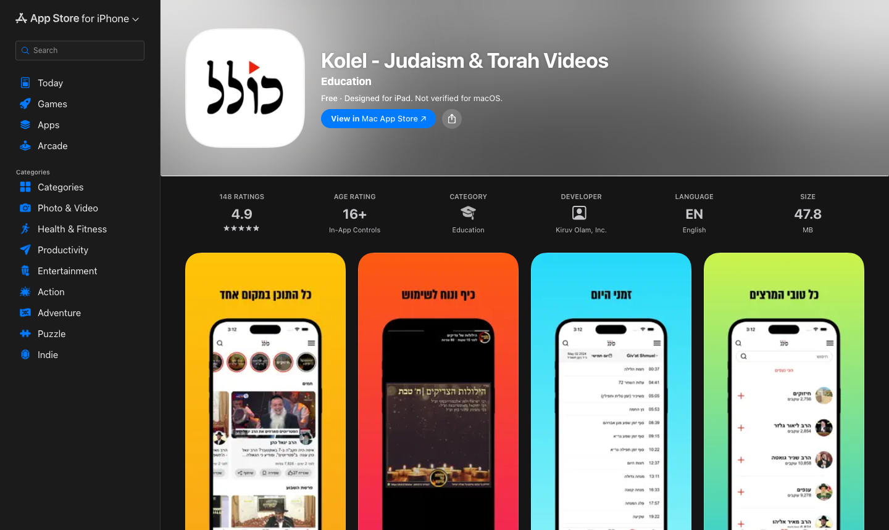
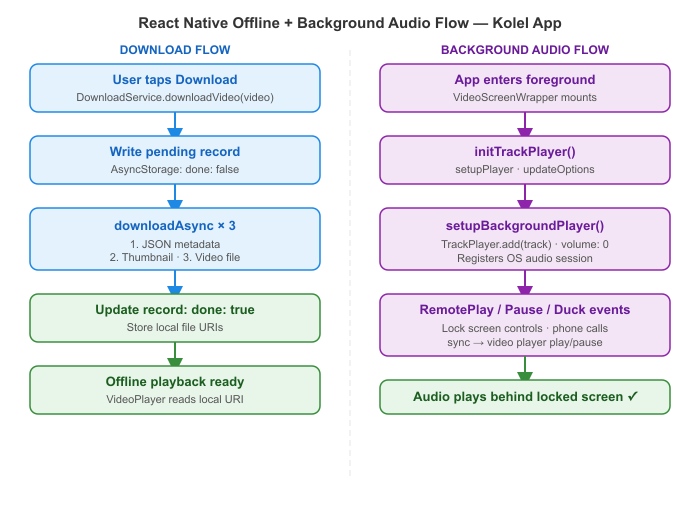

Offline Video Downloads & Background Audio in React Native with Expo
How we built offline video downloads and lock-screen audio controls in the Kolel iOS/Android app — using Expo FileSystem, react-native-track-player, and a typed service factory that keeps UI components out of the storage and audio logic.
The Problem
The Kolel app serves long-form Torah lessons — shiurim that run anywhere from 20 minutes to several hours. Many users listen while commuting, in synagogue, or in areas with unreliable connectivity. Two things were non-negotiable: users needed to download videos for offline playback, and audio needed to keep playing when the screen locked — with working lock-screen controls.
On React Native, both features touch platform-specific APIs that sit outside the standard React component model. The challenge was implementing them cleanly so that UI components stay unaware of where the file came from or how audio focus is managed.
What We Built


We implemented a DownloadService that handles the full offline asset pipeline — JSON metadata, thumbnail, and video file — stored in Expo's document directory.
For background audio, we use react-native-track-player: the video player registers a silent track with the OS audio session so that lock-screen controls (play, pause, stop) and audio interruption events (phone call, other app) are handled correctly.
Both are accessed through a typed service factory so components call ServiceFactory.createDownloadService() and never import platform APIs directly.
How It Works

Key Technical Decisions
1. DownloadService — 3-file download sequence
Each downloaded video stores three assets: a JSON file with metadata, a thumbnail, and the video itself. The service creates directory structure on first run and uses Expo's downloadAsync with authenticated headers:
// DownloadService.ts
async downloadVideo(video: Video) {
const store = StoreService.getStore();
await store.dispatch(apologize('Added to Downloads'));
// 1. Write a pending record to AsyncStorage immediately
const request: StoredData = {
type: 'video',
id: video.id,
durationInSeconds: video.durationInSeconds,
title: video.title,
startTimeInSeconds: 0,
done: false,
};
await this.addToStorage(request);
// 2. Download all 3 assets in sequence
await this.downloadJsonFile(video.id);
const thumb = await this.downloadThumbFile(video.id, video.thumbnail);
const videoFile = await this.downloadVideoFile(video.id, video.videoUrl);
// 3. Mark complete with local file URIs
await this.updateInStorage(video.id, {
done: true,
thumbnail: thumb.uri,
videoUrl: videoFile.uri,
});
await AnalyticsService.event('Video', 'Download', video.id.toString());
}
private async downloadVideoFile(videoId: number, videoUrl: string) {
const videos = new Directory(`${this.baseDir}videos`);
if (!videos.exists) videos.create();
return await downloadAsync(
videoUrl,
`${this.baseDir}videos/${videoId}.${DownloadService.getFileType(videoUrl)}`,
{ headers: await this.getAuthHeaders() },
);
}2. TrackPlayer initialised only when the app is foregrounded
TrackPlayer.setupPlayer() must run in the foreground. VideoScreenWrapper listens to AppState and defers initialisation until the app is active — preventing crashes on cold start in the background:
// VideoScreenWrapper.tsx
const systemService = ServiceFactory.createSystemService();
useEffect(() => {
const setupWhenForeground = async () => {
if (AppState.currentState === 'active') {
await systemService.initTrackPlayer();
setHasInitTrackPlayer(true);
} else {
const sub = AppState.addEventListener('change', async (state) => {
if (state === 'active') {
await systemService.initTrackPlayer();
setHasInitTrackPlayer(true);
sub.remove();
}
});
}
};
setupWhenForeground();
}, [hasInitTrackPlayer]);
// SystemService.ts
async initTrackPlayer(): Promise<void> {
await TrackPlayer.setupPlayer();
await TrackPlayer.updateOptions({
capabilities: [Capability.Play, Capability.Pause],
compactCapabilities: [Capability.Play, Capability.Pause],
android: {
appKilledPlaybackBehavior:
AppKilledPlaybackBehavior.StopPlaybackAndRemoveNotification,
},
});
}3. Video player registers a silent TrackPlayer track for OS audio session
The video player adds a track to TrackPlayer at volume 0. This registers the app with the OS audio session so lock-screen controls appear and RemotePlay / RemotePause / RemoteDuck events fire correctly — even though the actual audio comes from the video renderer:
// VideoPlayer.tsx
async setupBackgroundPlayer() {
await TrackPlayer.reset();
await TrackPlayer.add({
id: this.props.videoId,
url: this.props.videoURL,
title: this.props.videoTitle,
artwork: this.props.videoThumbnail,
artist: this.props.channelName,
duration: this.props.videoDurationMillis,
});
await TrackPlayer.seekTo(this.props.startVideoPos);
await TrackPlayer.setVolume(0); // silent — real audio from the video player
await TrackPlayer.pause();
}
async componentDidMount() {
await this.setupBackgroundPlayer();
// sync lock-screen controls → video player state
this.remotePlayRef.current = TrackPlayer.addEventListener(Event.RemotePlay, () => this.play());
this.remotePauseRef.current = TrackPlayer.addEventListener(Event.RemotePause, () => this.pause());
this.remoteStopRef.current = TrackPlayer.addEventListener(Event.RemoteStop, () => this.pause());
// handle audio interruptions (phone calls, other apps)
this.remoteDuckRef.current = TrackPlayer.addEventListener(Event.RemoteDuck, (event) => {
if (!this.state.isVideoLoaded) return;
event.paused ? this.pause() : this.play();
});
}4. Hook-based player keeps play/pause/seek decoupled
The functional video player component uses useCallback hooks that call both the native video ref and TrackPlayer in lockstep, ensuring the OS audio session state always matches what's on screen:
// ui/video-player/index.tsx
const pause = useCallback(async () => {
setIsVideoPaused(true);
deactivateKeepAwake();
TrackPlayer.pause();
}, [deactivateKeepAwake]);
const play = useCallback(async (reload?: boolean) => {
setIsVideoPaused(false);
activateKeepAwake(); // keep screen on during playback
TrackPlayer.play();
}, [isVideoFinished, activateKeepAwake]);
const seek = useCallback(async (seekTo: number) => {
await TrackPlayer.seekTo(seekTo);
videoRef.current?.seek(seekTo, 100); // native video seek
if (isVideoPaused) play();
}, [isVideoPaused, play]);Results / What Changed
- Users can download full lessons and watch them on flights, in synagogue, or on the subway — no connection required
- Lock-screen controls (play, pause) work correctly on both iOS and Android
- Audio resumes after a phone call interruption without user action
- The service factory pattern means no component imports
expo-file-systemorreact-native-track-playerdirectly — swap the implementation without touching UI - App Store rating: 4.9★ with 100K+ downloads across iOS and Android
Stack
Building a React Native video or audio app? Get in touch →